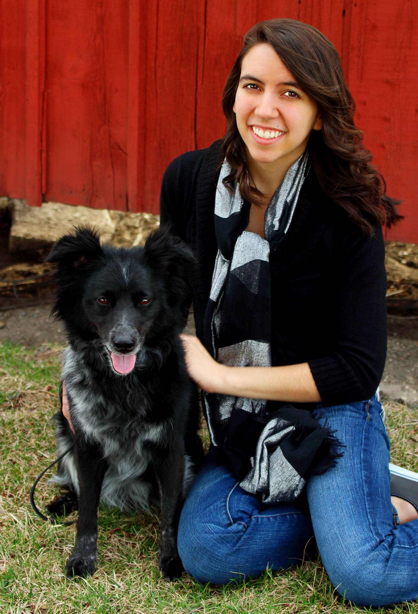
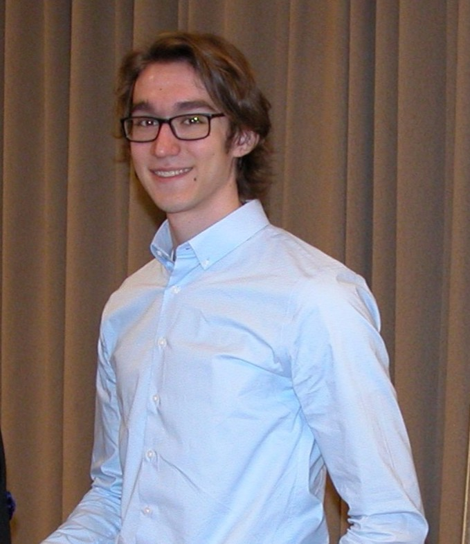

Erica Clark Data and Infastructure Wizard

Nathan De Graaf Codes things and algorithms well

Nathan KaraschManages projects like a boss
Jack Meyer Loves all things architecture
Nischay Venkatram Javascript enthusiast
Dr. Lotfi Ben-Othmane Client/Faculty Advisor